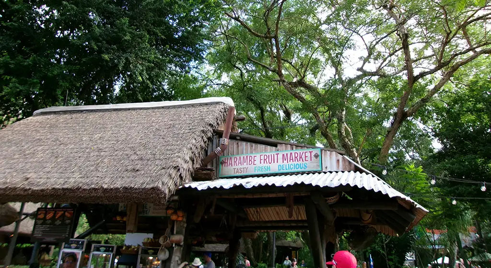

Animal Kingdom
Animal Kingdom is often underrated, and labeled as a half-day park. This is because it doesn’t have very many rides, but it still has so much to offer! It is an accredited zoo, and is a huge player in the conservation and preservation of our planet. The theming is beautiful and the most cohesive out of the four parks. There are incredible shows, fun experiences, lots of valuable learning opportunities, and it is breathtaking at night. It is a celebration of the beauty and wonder of nature, and is dedicated to educating people so that they learn to love and care about our world. Over the next few years there will be a lot of construction, but there is still a lot to do.
Lands
- Oasis
- Discovery Island
- Africa
- Asia
- Dinoland USA
- Rafiki's Planet Watch
Attractions
- Affection Section- petting zoo at Rafiki's Planet Watch.
- Animation Experience at Conservation Station- learn how to draw an animal Disney character!
- Avatar Flight of Passage- incredible ride, super long line usually.
- Dinosaur- only available until February 2025. So janky and old but so so fun.
- Discovery Island Trails
- Expedition Everest- Legend of the Forbidden Mountain- such a fun coaster! Single rider is definetly the way to go.
- Gorilla Falls Exploration Trail- trail to see the gorillas and more.
- Kali River Rapids
- Kilimanjaro Safaris- feels like a real African safari. You'll see more activity from the animals in the early morning and in the rain.
- Maharajah Jungle Trek- this is where you'll see the tigers and bats. Right now there is a baby tiger named Basko!
- Na'vi River Journey
- Wilderness Explorers- so fun for littles to learn about animals.
- Wildlife Express Train- this is how you'll get to Rafiki's Planet Watch. Don't skip this beacuse there are so many fun activities over there!
Food
Quick Service
- Flame Tree Barbecue- great kids meal options, and super yummy barbecue. Famous pulled pork mac and cheese.
- Harambe Market- this is where I worked! The rice bowls are amazing, and there are good options for kids and adults. Only open for lunch.
- Pizzafari
- Satu'li Canteen- a fan favorite at animal kingdom. Not as many options for picky eaters.
- Yak & Yeti Local Food Cafe- asian food and chicken tenders and fries.
Treats and Snacks
- Anandapur Ice Cream Truck- such a cute truck, good for soft serve chocolate and vanilla ice cream.
- Caravan Road
- Creature Comforts
- Dawa Bar
- Dino-Bites Snacks
- Drinkwallah
- Eight Spoon Cafe
- Harambe Fruit Market- fresh fruit, pretzels, churros, and the best roasted street corn. Perfect place to grab a snack to eat while you are in line for the safari.
- Isle of Java
- Kusafiri Coffee Shop & Bakery
- Mahindi
- Mr. Kamals- chicken dumplings and seasoned french fries. I personally thing they are a little bit overrated, but it has a big fan base.
- Pongu Pongu
- Tamu Tamu Refreshments- pastries and pineapple dole whip. Perfect for breakfast or a snack.
- Thirsty River Bar
- Trilo-Bites- orange and line dole whip.
- Warung Outpost
- Zuri's Sweet Shop
Table Service
- Nomad Lounge
- Rainforest Cafe
- Tiffins Restaurant
- Yak & Yeti Restaurant
Character Dining
- Tusker HOuse Restauarnt- incredible African and Indian food and super fun character interactions.
Shows/Entertainment
Check app for locations and available times.
- Animal Encounters: Winged Encounters- The Kingdom Takes Flight
- Beats and Strings
- Eco-Rythmics
- Freathered Friends in Flight- a super fun show with really cool birds who do tricks and sing.
- Festival of the Lion King- incredible musical acrobatics show with fire and gymnists and dancers. So so fun.
- Finding Nemo: The Big Blue... and Beyond!
- Harambe Village Street Band- Burudika- such a fun show with dancers that get you to dance too. Not something to go out of your way for but so fun if you happen to see it.
- Kora Tinga Tinga- This is a man from Africa who plays the most beautiful music on this super unique instrument. He is also the sweetest guy and loves talking to people.
- Tam Tam Drummers of Harambe- fun drum show. Not something to go out of your way for but so fun if you happen to see it.
- Tree of Life Awakenings- projection show on the tree of life at night. So fun and cute.
- Viva Gaia Street Band
Characters
Check app for locations and available times.
- Chip and Dale- in the cutest dinosaur onesies. Such fun chaaracters to interact with. Always fun to ask them to do a competition, or ask which one is better at something.
- Daisy Duck
- DiVine- wandering character at the front of the park. So pretty and magical.
- Donald Duck
- Dug- so so cute but usually has a long line.
- Goofy
- Kevin
- Mickey Mouse- in his cute safari outfit. The only place on property where you can meet Mickey and Minnie together.
- Minnie Mouse- in her cute safari outfit. The only place on property where you can meet Mickey and Minnie together.
- Moana
- Pluto
- Pocahontas
- Rafiki- so funny and unhinged.
- Russell- so cute but has a long line.
- Timon
Animals
- African Birds
- African Elephants
- African Hogs
- African Lions
- Ankole Cattle
- Anteaters
- Asian Birds
- Asian Small-Clawed Otters
- Babirusas
- Bats
- Black Rhinos
- Butterflies
- Cotton-Top Tamarins
- Flamingos
- Gibbons
- Giraffes
- Gorillas
- Hippopotamuses
- Invertebrates
- Kangaroos
- Komodo Dragons
- Lemurs
- Meerkats
- Migratory Birds
- Okapis
- Tigers
- Vultures
- White Rhinos
- Zebras